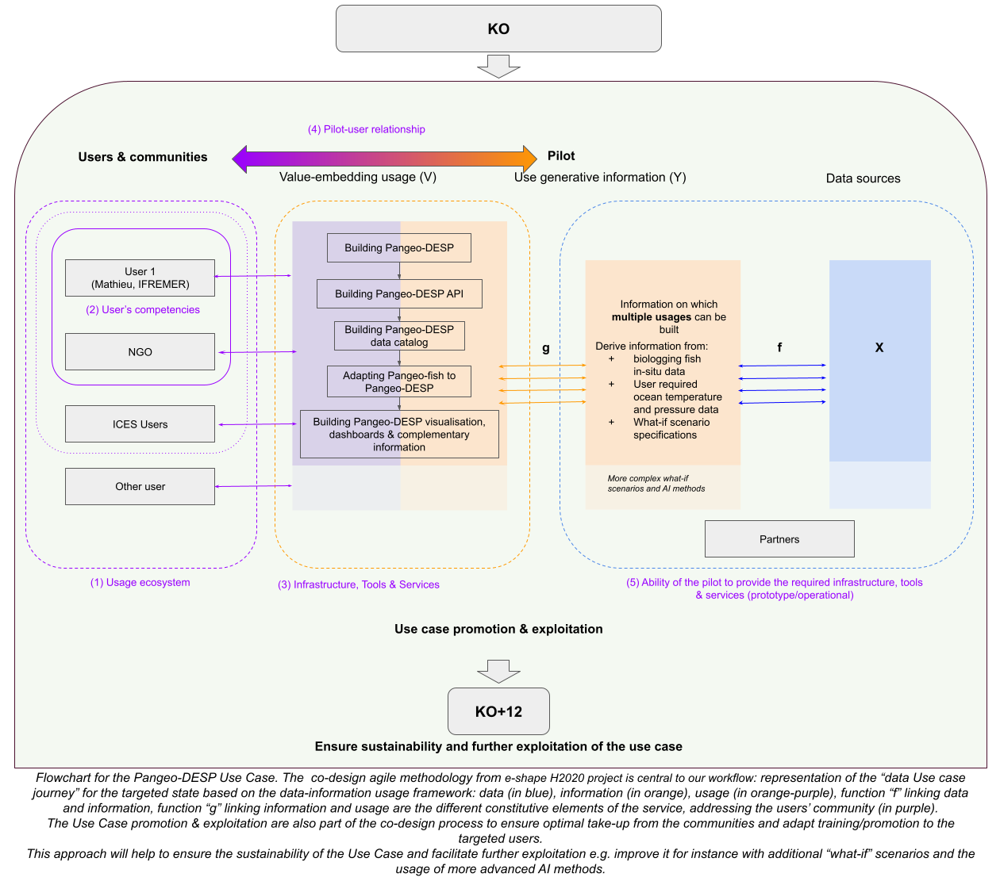

GFTS SVVP Software Verification and Validation Plan
Introduction
This document describes the software verification and validation plan for the Global Fish Tracking Software (GFTS) DestinE Platform use case. GFTS is a complex system that requires solid quality assurance to deliver a stable and reliable service. For this we will verify that the software functions as expected, and validate that the result is useful for users and fulfills its overall purpose.
Verification
We have performed activities to verify the functionality of the GFTS use case with respect to the project plan. The GFTS system has been tested with different levels of tests, each adapted to the respective requirements of the different components. For this, the verification focused on state of the art software testing using both unit tests and integration tests in continuous development and integration (CD/CI) type environments such as GitHub actions. This ensured that the incremental improvements were successfully integrated and compliant with already existing components.
Fish track reconstruction
The fish track environment allows users to reconstruct fish tracks from biologging data. The verification of these reconstruction algorithms was done both on a software level and on a scientific basis. The software verification ensured that the software runs efficiently and error free. The scientific verification compared the output with other existing datasets and the expected results. This allowed to verify that the algorithm itself is producing the scientifically correct results.
Decision support tool
The decision support system has a front-end component and a back-end component. We have developed unit tests and integration tests for the most important components of the system.
Validation
To ensure that the GFTS project delivers the right kind of product, we focused on interacting with potential users while we built the system. This helped validate the decisions we make along the execution of the project, and helped the project to stay on track to produce a system that is as useful as possible in practice.
The co-design methodology developed within the e-shape H2020 project was adopted to ensure that all stakeholders were engaged and their needs were addressed. This co-creation process consisted of two phases. The first phase involved a comprehensive “diagnosis process” to identify specific co-design requirements, categorized into four different types of co-design: (1) adjustment between user and service designer, (2) exploration for usage initiation, (3) engineering for service operationalisation, (4) exploration for usage expansion. The second phase entailed implementing co-design actions to address these identified needs. The co-creation method for the development of DTs was also open by design from the initial idea until the end of the project, and used the same open methodology to share and facilitate reuse. This ensured that the infrastructure and co-creation process were transparent and accessible to all stakeholders, fostering collaboration and innovation. One of the key components was new collaborative Jupyter notebooks simultaneously accessible by several developers in real time to realize the full potential of creative design and collaboration.
The following graphic shows how we implement the validation activities.
